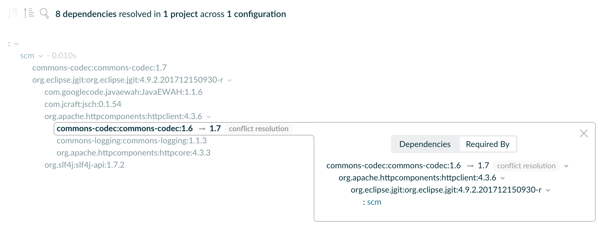

Gradle 提供了一些工具，帮助你查看依赖管理的结果，更准确地理解 Gradle 如何解析依赖，以及为什么这样解析。你可以展示完整的依赖图，确定某个依赖来自哪里，并查看选择特定版本的原因。依赖既可能来自构建脚本中的直接声明，也可能通过传递关系引入。
要以可视化方式查看依赖，可以使用：
dependencies任务dependencyInsight任务
使用 dependencies 任务列出项目依赖
dependencies 任务尤其适合分析传递依赖。构建文件列出的是直接依赖，而该任务可以帮助你了解构建过程中解析出了哪些传递依赖。
$ ./gradlew dependencies要展示在 buildscript 的 classpath 配置中声明的依赖图，请使用 buildEnvironment 任务。 |
理解输出中的标记
$ ./gradlew :app:dependencies> Task :app:dependencies
------------------------------------------------------------
Project ':app'
------------------------------------------------------------
annotationProcessor - Annotation processors and their dependencies for source set 'main'.
No dependencies
compileClasspath - Compile classpath for source set 'main'.
\--- com.fasterxml.jackson.core:jackson-databind:2.17.2
+--- com.fasterxml.jackson.core:jackson-annotations:2.17.2
| \--- com.fasterxml.jackson:jackson-bom:2.17.2
| +--- com.fasterxml.jackson.core:jackson-annotations:2.17.2 (c)
| +--- com.fasterxml.jackson.core:jackson-core:2.17.2 (c)
| \--- com.fasterxml.jackson.core:jackson-databind:2.17.2 (c)
+--- com.fasterxml.jackson.core:jackson-core:2.17.2
| \--- com.fasterxml.jackson:jackson-bom:2.17.2 (*)
\--- com.fasterxml.jackson:jackson-bom:2.17.2 (*)
...dependencies 任务使用以下标记说明依赖树中的内容：
指定依赖配置
要只查看某个依赖配置，可以使用可选的 --configuration 参数。
与项目名和任务名一样，Gradle 允许缩写依赖配置名称。例如，只要能够唯一匹配某个配置，就可以用 tRC 代替 testRuntimeClasspath。
以下示例展示了如何查看 Java 项目中 testRuntimeClasspath 配置的依赖：
$ ./gradlew -q dependencies --configuration testRuntimeClasspath$ ./gradlew -q dependencies --configuration tRC要查看项目中的所有配置，包括插件提供的配置，可以运行 resolvableConfigurations 报告。更多信息请参阅相应插件的文档，例如这里的 Java 插件文档。
看一个例子
下面的示例声明了一个名为 scm 的自定义依赖配置，其中包含 JGit 依赖：
configurations {
create("scm")
}
dependencies {
"scm"("org.eclipse.jgit:org.eclipse.jgit:4.9.2.201712150930-r")
}configurations {
scm
}
dependencies {
scm 'org.eclipse.jgit:org.eclipse.jgit:4.9.2.201712150930-r'
}使用以下命令查看 scm 依赖配置的依赖树：
$ ./gradlew -q dependencies --configuration scm------------------------------------------------------------
Root project 'dependencies-report'
------------------------------------------------------------
scm
\--- org.eclipse.jgit:org.eclipse.jgit:4.9.2.201712150930-r
+--- com.jcraft:jsch:0.1.54
+--- com.googlecode.javaewah:JavaEWAH:1.1.6
+--- org.apache.httpcomponents:httpclient:4.3.6
| +--- org.apache.httpcomponents:httpcore:4.3.3
| +--- commons-logging:commons-logging:1.1.3
| \--- commons-codec:commons-codec:1.6
\--- org.slf4j:slf4j-api:1.7.2
A web-based, searchable dependency report is available by adding the --scan option.使用 dependencyInsight 任务确定选中的版本
一个项目可能直接或通过传递关系请求同一依赖的两个不同版本，这可能造成版本冲突。
下面的示例同时将 commons-codec:commons-codec 作为直接依赖，以及 JGit 的传递依赖引入，从而造成冲突：
repositories {
mavenCentral()
}
configurations {
create("scm")
}
dependencies {
"scm"("org.eclipse.jgit:org.eclipse.jgit:4.9.2.201712150930-r")
"scm"("commons-codec:commons-codec:1.7")
}repositories {
mavenCentral()
}
configurations {
scm
}
dependencies {
scm 'org.eclipse.jgit:org.eclipse.jgit:4.9.2.201712150930-r'
scm 'commons-codec:commons-codec:1.7'
}Gradle 提供了内置的 dependencyInsight 任务，用于从命令行展示依赖洞察报告。
依赖洞察会提供单个配置中某个依赖的信息。针对某个依赖，你可以查明其版本选择的原因与来源。
dependencyInsight 接受以下参数：
--dependency <dependency>（必填）要调查的依赖。可以提供完整的
group:name，也可以只提供其中一部分。如果匹配了多个依赖，Gradle 会生成涵盖所有匹配依赖的报告。--configuration <name>（必填）用于解析指定依赖的依赖配置。对于使用 Java 插件的项目，这个参数是可选的，因为该插件会提供默认值
compileClasspath。--single-path（可选）只展示通往该依赖的一条路径。
--all-variants（可选）展示所有变体的信息，而不只展示选中变体的信息。
下面的代码片段演示了如何运行依赖洞察报告，查看 scm 配置中所有通往名为 commons-codec 的依赖的路径：
$ ./gradlew -q dependencyInsight --dependency commons-codec --configuration scmcommons-codec:commons-codec:1.7
Variant default:
| Attribute Name | Provided | Requested |
|-------------------|----------|-----------|
| org.gradle.status | release | |
Selection reasons:
- By conflict resolution: between versions 1.7 and 1.6
commons-codec:commons-codec:1.7
\--- scm
commons-codec:commons-codec:1.6 -> 1.7
\--- org.apache.httpcomponents:httpclient:4.3.6
\--- org.eclipse.jgit:org.eclipse.jgit:4.9.2.201712150930-r
\--- scm
A web-based, searchable dependency report is available by adding the --scan option.理解选择原因
依赖洞察报告中的“Selection reasons”（选择原因）部分会列出选中某个依赖的原因。
| 原因 | 含义 |
|---|---|
（未显示原因） | 除了直接或传递的引用之外，没有其他原因。 |
请求引入： | 该依赖出现在图中，而且引入时附带了 |
请求引入，但与所列版本不匹配： | 该依赖使用了动态版本，而这个动态版本不包含列出的版本。后面可能附有 |
请求引入，但排除了所列版本： | 该依赖使用了包含一个或多个 |
通过冲突解决，在多个版本之间作出选择： | 该依赖多次出现，且请求的版本不同。因此触发了冲突解决，以选择最合适的版本。 |
依据约束： | 有依赖约束参与了版本选择。后面可能附有 |
依据祖先节点： | 某个丰富版本声明包含 |
由规则选中： | 某条依赖解析规则覆盖了默认的选择过程。后面可能附有 |
因规则而拒绝某个版本，并说明原因： | 某个 |
因属性而拒绝某个版本： | 该依赖使用了动态版本，其中一些版本不符合请求的属性。 |
强制指定： | 构建通过强制平台（enforced platform）或解析策略强制指定了该依赖的版本。 |
如果存在多个选择原因，洞察报告会全部列出。
使用 Build Scan 获取整体视图
Build Scan 中的依赖树会显示冲突信息。
上面的 commons-codec 示例已创建一个 Build Scan，并提供了指向结果的 URL。
进入 Dependencies 选项卡，找到你想查看的依赖。选择 Required By 选项卡，就可以查看该依赖的选择原因和来源：

解决不安全的配置解析错误
解析配置可能对 Gradle 的项目模型产生副作用，因此 Gradle 需要管理对每个项目中配置的访问。配置可能以多种不安全的方式被解析。Gradle 会对每次不安全访问发出弃用警告。这些做法都不合适，可能导致异常且不确定的错误。
如果构建中出现了不安全访问的弃用警告，就需要修复。
例如：
一个项目的任务在自己的任务动作中，直接解析另一个项目中的配置。
一个任务将另一个项目的配置指定为自己的输入文件集合。
一个项目的构建脚本在求值期间解析另一个项目中的配置。
在 settings 文件中解析项目配置。
大多数情况下，可以通过创建对另一个项目的跨项目依赖来解决这个问题。更多信息请参阅在项目之间共享输出的操作指南。
如果你遇到的使用场景无法用这些方式解决，请遵循我们的问题提交指南，提交一个 GitHub Issue 告诉我们。